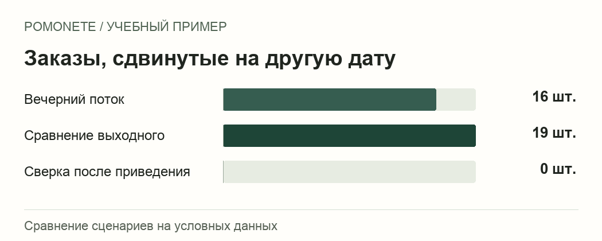

Почему вчерашние заказы появились сегодня. Границы суток Яндекс Маркета
Как селлеру провести проверку дат по часовой зоне и срезу события.
У селлера Яндекс Маркета ночные заказы в выгрузке видны на другой дате, чем в рабочей таблице. Для аналитики это влияет на сводку смены и на сравнение реакции на кампанию. Исправим интерпретацию времени и проверим несколько граничных событий.
Что записать до преобразования
Сохраните исходную временную метку, её смещение и тип события. Для управленческого дня определите зону отдельно. Используйте одни границы выборки, включая начало и исключая конец. Это позволяет двум соседним дням разделить события без повторного включения.
Чтобы пересобрать расчёт «Заказы, сдвинутые на другую дату» для своего магазина, перенесите в него исходные числа. В формуле A обозначает «заказы по локальному интервалу», B обозначает «заказы по ошибочному интервалу». Знак показывает направление разницы. Обе величины приводят к одному периоду и одной единице измерения до вычитания. Запишите рядом период и охват каждого среза. Для оценочных строк оставьте пояснения рядом с исходными значениями. При чтении сводки будет видно, какие из них пока подтверждены.
Заказы, сдвинутые на другую дату = A − B
| Условие | Заказы по локальному интервалу | Заказы по ошибочному интервалу | Заказы, сдвинутые на другую дату |
|---|---|---|---|
| Вечерний поток | 103 | 87 | 16 шт. |
| Сравнение выходного | 134 | 115 | 19 шт. |
| Сверка после приведения | 134 | 134 | 0 шт. |

В сценарии «Вечерний поток» в формулу подставляем заказы по локальному интервалу = 103, заказы по ошибочному интервалу = 87. Получается 16 шт.. Часть заказов попала в соседнюю дату при чтении исходного времени.
В сценарии «Сравнение выходного» в формулу подставляем заказы по локальному интервалу = 134, заказы по ошибочному интервалу = 115. Получается 19 шт.. Сдвиг заметнее из-за активности покупателей поздно вечером.
В сценарии «Сверка после приведения» в формулу подставляем заказы по локальному интервалу = 134, заказы по ошибочному интервалу = 134. Получается 0 шт.. Обе группы читаются с единым определением даты и часовой зоны.
Если «Вечерний поток» взять за исходную точку, «Сравнение выходного» меняет показатель «заказы, сдвинутые на другую дату» на 3 шт., а «Сверка после приведения» на -16 шт.. Между двумя последними строками разница составляет -19 шт. при вычитании второй из третьей. Смотрите, какой именно вход изменился между строками. Если менялись объём и условия одновременно, итог сравнения относится ко всему сочетанию.
При расчёте «заказы, сдвинутые на другую дату» оставляйте исходную точность, пока складываете значения и сверяете строки. В таблице видны 16 шт., 19 шт. и 0 шт., уже округлённые для чтения. При суммировании многих периодов используйте исходные данные. Например, удельные результаты с разными знаменателями нужно пересобрать из числителей и соответствующих объёмов, а затем округлить. Пометьте, где округление применяется, чтобы при передаче отчёта речь шла об одних и тех же числах.
Почему может меняться отчёт даже при едином времени
Фильтры по дате создания, передачи и доставки дадут разные группы. Если оба отчёта используют разные события, приведение часовой зоны само по себе ничего не исправит. Сначала узнайте назначение столбца и сравните одну операцию в деталях.
Воспроизводимость здесь начинается с критериев включения. Отметьте, чем «Вечерний поток» отличается от «Сверка после приведения» и какие наблюдения будут отброшены в каждой строке. Как подтверждение используйте исходная выгрузка, журнал загрузок и контрольные суммы. У неполных записей выделите одну причину. Она покажет, какие цифры ещё стоит собирать и какой объём анализа потерян.
Перед обновлением отчёта сохраните источник, параметры запроса, время выгрузки и число строк на каждом шаге. Сначала проверяют ключ и единицу наблюдения, потом сравнивают итоговые суммы. Одинаковые суммы могут относиться к самостоятельным операциям. Чтобы найти дубль, проверьте ключ и документы. Подключив справочник, проверьте, какие записи не сопоставились, и разнесите их по причинам до пересчёта показателя.
Что сильнее всего меняет результат
От результата 19 шт. в строке «Сравнение выходного» пересчитайте несколько вариантов. Проверьте «заказы по локальному интервалу», «заказы по ошибочному интервалу». Прибавка около десятой доли на вход показывает реакцию за один шаг. Целые числа сохраняем целыми. Для долей, где прирост выводит числитель за предел базы, пробуем уменьшение. Все остальные параметры при каждой подстановке сохраняются.
- «Заказы по локальному интервалу» меняется с 134 на 147. При прежних остальных входах получается 32 шт., сдвиг составляет 13 шт..
- «Заказы по ошибочному интервалу» меняется с 115 на 127. При прежних остальных входах получается 7 шт., сдвиг составляет -12 шт..
Больше всего изменила итог подстановка «заказы по локальному интервалу». Отклонение составило 13 шт.. До сбора новых данных оцените, насколько правдоподобен такой шаг. Например, расход может подтверждаться документом, а объём пока наблюдается лишь частично. Уточняйте прежде всего те входы, где одновременно возможен заметный сдвиг и мало подтверждений.
Проверьте также период недельного отчёта в понедельник утром. Даже правильное деление может менять набор заказов при использовании разных исходных недель. В подписи к сводке оставьте часовой пояс и время последнего подтверждённого среза.
Как проверить пересчёт в производстве
Возьмите два соседних дня и несколько заказов по обе стороны полуночи. Проверьте общую сумму двух дат и расклад каждой. Дайте владельцу отчёта примеры с исходным временем и новой датой, прежде чем заменять данные истории.
При повторном импорте берите ту же исходную выборку и фиксируйте, какие записи действительно изменились. В стабильном отчёте сумма после второго прогона того же набора остаётся равной первой. Отложенные корректировки могут изменить поздний снимок, поэтому журнал версий пригодится для ответа на вопрос, когда возникло отличие. Дайте пользователю отчёта ссылку на строку, которую можно проверить вручную.
Чтобы отделить ошибку оценки от реального изменения, после следующего отчёта соберите «заказы, сдвинутые на другую дату» дважды. Сначала используйте исходное правило, затем замените только один предположенный вход фактическим. Так аналитика селлера Яндекс Маркета покажет, стоит ли тратить время на повторный замер или менять рабочую операцию. В итоговом отчёте сохраните обе даты проверки.